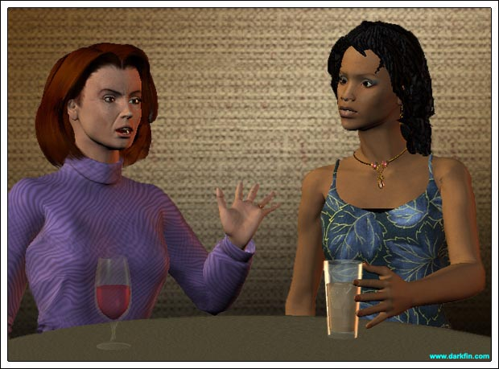
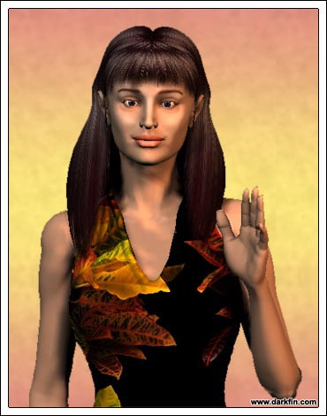

Lydia (Glancing at her watch) I do hope Ona Rosa shows up soon, I am absolutely starving!
Shelby (Sipping her iced tea) I know what you mean, I am about to reach over to the next table and snatch us a couple of jumbo prawns
Lydia Please do - this new medicine the doctors have me on is making me eat like a pig... so, not only do I get to be a cripple, I get to be a fat cripple
Shelby (Waving her finger) Woman, do not talk about yourself that way in front of my eyes, for my eyes only see a beautiful, intelligent, caring, soul!
Lydia (Patting her hand) Thank you, Shel
Shelby So, is the medicine helping at all?
Lydia It's helping put my grocer's children through college
Shelby (Covering her ears) Children and college - I do not want to hear those words together!
Lydia Little Calvin has a few years to go yet
Shelby Yes, however, by the time he is ready - it will cost me more than what my house is worth... I make a good living and I manage my money well but I am still looking at an exorbitant amount
Lydia With you being a professor at the university, that will undoubtedly help
Shelby (Aghast) Did you just fall out of a coconut tree? - my son is NOT going to Santa Conchita University - only Harvard or Oxford... Yale if all else fails
Lydia (Sipping her wine) No pressure on Cal
Shelby I want what's best for him
Lydia I'd consider it a personal victory if Penny made it into SCU - hell, she'll be lucky to get into a community college
Shelby Ah, but Penny is a very bright girl, she just needs to apply herself more
Lydia (Sighing) According to one of the lifeguards, she was applying herself to Brad behind some sand dunes
Shelby GOODNESS, that man is her uncle!
Lydia I know, but he keeps throwing the adoption factor in my face - it's bad enough she dates that Jeremy boy but now Brad
Shelby (Shaking her head) I pray to Oshzn she protects herself
Lydia Thank God the lifeguard stopped them before they went too far
Shelby Did you ask her about it?
Lydia She just said it was a terrible mistake and it wouldn't happen again
Shelby Do you believe her?
Lydia (Staring at her drink) I'd like to
Shelby What does George say?
Lydia What does George ever say? - tell me, does Timothy Hajanian show any signs of going to another school for his Ph.D.?
Shelby (Fiddling with her napkin) Not that I'm aware of

Ona Rosa (Reaching over to kiss Lydia and Shelby on the cheeks) Ladies, I am so sorry for being late, we were held up in traffic... this is Wing Mei, she is the wife of a new professor at the university
Shelby (Extending her hand and smiling) Of course, Dr. Dong's wife, so nice to finally meet you
Wing (Bowing) Hello
Ona Rosa (Taking a seat) Wing works in the IT department of Meer-a-Mar and is interested in becoming involved with our charity
Lydia Excellent, we appreciate your interest and can always use an extra hand
Wing I look forward very much to helping childrens
Wing I do not want strawberry in my sal-lah
Shelby Get the Caesar Salad, Wing, it's delicious
Wing What is Caesar?
Lydia So, Oni, you mentioned in your message that you wanted to speak to us about something other than the charity?
Ona Rosa Yes, I want to talk about Vesper - I know she's a close friend of Penelope and baby-sits both Calvin and my children
Wing I do not want grape in my sal-lah
Shelby What about Vesper?
Ona Rosa Well, I had a little talk with her yesterday about her situation and I told her it was a sign from God
Lydia YOU TOLD HER A COKE ADDICTION WAS A SIGN FROM GOD?
Ona Rosa WHAT COKE ADDICTION?
Shelby WHAT?
Ona Rosa SHE TOLD ME SHE WAS 6 WEEKS PREGNANT
Lydia SHE'S PREGNANT?
Shelby WHAT?
Wing I do not want nut on my sal-lah
Lydia Jesus, Wing, it's a $10.00 salad, you BETTER get nuts and fruit with it!
Shelby WAIT A MINUTE, WAIT A MINUTE, WAIT A MINUTE - BACK UP... Vesper has a problem with coke and is knocked up as well?
Ona Rosa She didn't tell me about the cocaine but that doesn't change anything
Lydia It doesn't?
Ona Rosa I told Vesper to keep the baby - she had an appointment for an abortion tomorrow but I told her no, that this is a life, a sign from God that He wants her to settle down and have a family
Lydia & Shelby ARE YOU INSANE?
Wing I think I get Sanna Fe sal-lah - what is Sanna Fe?
Ona Rosa I want you two to help me convince her that this is the right thing to do
Lydia & Shelby YOU REALLY ARE INSANE
Ona Rosa I can't believe I'm hearing this - Shelby, you're an unwed mother
Shelby And as much as I dearly love my son, I was not ready for him in my life - I wish I had waited... I wish I had kept my legs shut!
Lydia Tell me, will the father take responsibility for Vesper's baby?
Ona Rosa She's not sure who the father is exactly but of the potential ones, all tell her to kill this child
Shelby It is a cluster of cells right now
Lydia Think about what you're saying, Ona Rosa - you want this barely 20-year-old to become an unwed mother who does not have her college degree, who doesn't know exactly who the father is and is tanked up on coke and God knows what else to have a baby that you know damn well she can't care for... is that what you really want?
Ona Rosa She can give it up for adoption - you adopted your daughter, Lydia, you would think you would want this?
Lydia My circumstances were entirely different and we're not talking about Penny, we're talking about Vesper, and everyone sitting here at this table...
Wing Maybe I get duck sal-lah
Lydia Most everyone here at this table knows that Vesper is the type who would NEVER give up her child for adoption, she doesn't have it in her
Shelby I agree
Ona Rosa Well, I don't - I know this wonderful, infertile couple from the university club who are looking to adopt
Lydia So, this is a baby brokering deal?
Ona Rosa Don't say it like that
Shelby Oni, we all know how Vesper looks up to you like a big sister and I have to say you're taking extreme advantage of that
Lydia Don't forget, she has a coke problem - she obviously does not have the responsibility to take care of herself or this child - and we all know how drug addicted babies turn out
Shelby Is the university club couple going to want a child with Down Syndrome or worse?
Ona Rosa I just can't believe you two want her to kill this baby!
Shelby IT IS ONLY A CLUMP OF CELLS RIGHT NOW
Lydia Vesper was immature enough to get into this situation, now she needs to find the maturity to get out of this situation - it really is none of our business but I will tell you right now that if you keep telling her to keep it, I will make sure she hears ALL of the pros and cons
Shelby I'm with Lydia
Wing I think Ona Rosa is right - they kill babies all the time in China, it is wrong... and I have roast beef sandwich